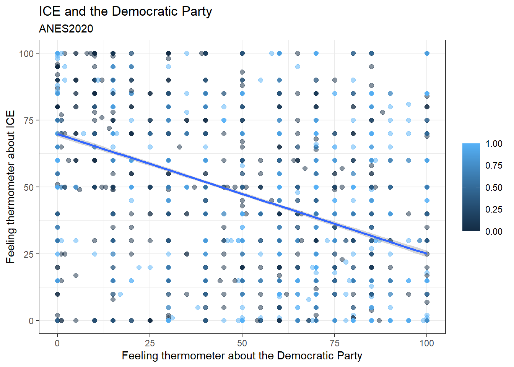

Chapter 9 Multiple regression
9.1 Getting started with this chapter
To get started in today’s chapter, open the project that you made in lab 1. If you forgot how to do this, see the instructions in section 2.2.
Now type install.packages("stargazer") into the Console (Stargazer is designed by Hlavac (2022)). This new package will help us label our graphs in a way that is easier to read.
Next, open a new script file and save it in your scripts folder as “chapter 9 practice.” Write this on the page:
####################################
# Your name
# 20093 Chapter 9, Practice exercises
# Date started : Date last modified
####################################
#libraries------------------------------------------
library(tidyverse)
library(ggrepel)
library(stargazer)Now select all the text on this page, run it, and then save it.
9.2 Multiple regression
In the last chapter, we learned how to do bivariate ordinary least squared (OLS) regression. This is an extremely powerful tool for statistical inference because it both provides a proportional reduction in error estimate (\(R^2\)), which tells us exactly how much of the variation in our dependent variable is explained by variation in our independent variable, and it provides us with a coefficient estimate, which tells us exactly what we expect to happen to our dependent variable with every one unit increase in our independent variable.
But there is one more reason that regression is a tool beloved by scientists. It provides an easy way to control for many different independent variables at the same time. Recall that in Chapter 8 we discussed how when R is running a regression it is estimating the values of M and B in the formula Y=MX+B. Another way that we can write that same formula is like this: \[Y=β_0+ β_1X_1\] In this version of the formula, we call the intercept \(β_0\) (β is the Greek letter Beta) instead of B, and we call the slope \(β_1\) instead of M. When conducting bivariate regression, we are asking R to give us the values of \(β_0\) (the intercept, or B) and \(β_1\) (the slope, or M) that best fits our data. When we want to conduct multiple regression, we can use the same principle, but we just have to add more independent variables and βs, like this: \[Y=β_0+ β_1X_1 + β_2X_2 + β_3X_3+…+ β_nX_n\] Multiple regression results include an estimate for all of those βs. The estimates are called “partial regression coefficients,” which is generally shortened to “coefficients.” And they are very powerful! In the above equation, R’s estimated value for \(β_1\) tells us what we expect to happen to our dependent variable, Y, when we increase \(X_1\) by one unit, and when we hold \(X_2\), \(X_3\), and all other independent variables in our equation constant. Thus, if someone were to say “Hey, I think that the relationship that you observe between \(X_1\) and Y is spurious; variation in \(X_2\), which happens to be correlated with \(X_1\), is the actual cause of variation in Y!” You can reply, “in this multiple regression, I controlled for \(X_2\) (in other words, I looked at the relationship between \(X_1\) and Y at similar values of \(X_2\)) and I still found a meaningful relationship between \(X_1\) and Y. Thus, I can rule out spuriousness!”
Let’s try an example. We will start with a bivariate regression analysis. Under the Trump administration, feelings on the federal agency Immigration and Customs Enforcement (ICE) became pretty politicized. So, I hypothesize that people that feel more warmly about the Democratic Party will likely feel more coldly about ICE (and vice versa). To test this hypothesis, we can run the following regression:
##
## Call:
## lm(formula = ft_ice ~ ft_dems, data = anes2020)
##
## Coefficients:
## (Intercept) ft_dems
## 69.8606 -0.4475This output helps us write the equation for the relationship between feelings on the Democratic Party and feelings in ICE:
ft_ice = 69.8606 + -0.4475 (ft_dems)
So in other words, R is estimating that someone who gives Democrats a score of 0 would give ICE a 69.86, and when feelings about the Democratic Party increase by 1, feelings about ICE decrease by 0.45. This is consistent with my theory. However, are these estimates statistically significant? And how much variation in feelings on ICE will our model explain? We could just put summary() around the command that we entered above, but instead we are going to try something a little different. We are going to call the regression of the relationship between feelings on Democrats and feelings on ICE “model.1” and then ask R to summarize “model.1,” like this:
##
## Call:
## lm(formula = ft_ice ~ ft_dems, data = anes2020)
##
## Residuals:
## Min 1Q Median 3Q Max
## -69.861 -19.651 1.467 18.181 74.894
##
## Coefficients:
## Estimate Std. Error t value Pr(>|t|)
## (Intercept) 69.860595 0.543358 128.57 <2e-16 ***
## ft_dems -0.447543 0.009737 -45.96 <2e-16 ***
## ---
## Signif. codes: 0 '***' 0.001 '**' 0.01 '*' 0.05 '.' 0.1 ' ' 1
##
## Residual standard error: 26.29 on 6969 degrees of freedom
## (1309 observations deleted due to missingness)
## Multiple R-squared: 0.2326, Adjusted R-squared: 0.2325
## F-statistic: 2112 on 1 and 6969 DF, p-value: < 2.2e-16This output shows us that the estimates of the slope and intercept are both statistically significant, and that the adjusted \(R_2\) is .2325, which means that variation in feelings about the Democratic Party explains about 23.25% of variation in feelings about ICE.
There are many variables which are likely to be correlated with feelings about Democrats which might actually explain the variation in feelings about ICE. To start, let’s look at our age variable, since we know that older people are more likely to be conservative than are younger people. When we control for age, is the relationship between feelings about the Democratic Party and ICE still statistically significant? To help us answer this question, we need to have R estimate \(β_1\) and \(β_2\) in this formula:
ft_ice=\(β_0\) + \(β_1\)ft_dems + \(β_2\)age
We can do that with this command:
##
## Call:
## lm(formula = ft_ice ~ ft_dems + age, data = anes2020)
##
## Residuals:
## Min 1Q Median 3Q Max
## -81.427 -17.172 0.951 17.502 88.915
##
## Coefficients:
## Estimate Std. Error t value Pr(>|t|)
## (Intercept) 47.039775 1.085838 43.32 <2e-16 ***
## ft_dems -0.441223 0.009521 -46.34 <2e-16 ***
## age 0.429844 0.018050 23.81 <2e-16 ***
## ---
## Signif. codes: 0 '***' 0.001 '**' 0.01 '*' 0.05 '.' 0.1 ' ' 1
##
## Residual standard error: 25.27 on 6717 degrees of freedom
## (1560 observations deleted due to missingness)
## Multiple R-squared: 0.291, Adjusted R-squared: 0.2907
## F-statistic: 1378 on 2 and 6717 DF, p-value: < 2.2e-16Looking at the Pr(>|t|) column in this output, we can see that the intercept and both coefficient estimates are statistically significant, because the numbers are much, much lower than .05. The value of adjusted \(R_2\) is .2907, which means that variation in age and feelings about the Democratic Party explains about 29% of variation in feelings about ICE. We can also use the estimates column to estimate the βs in the above equation, like this:
ft_ice=47.04 - 0.44ft_dems + 0.43age
This equation is telling us that, based on our data, R predicts that someone who gave the Democratic Party a 0 and was 0 years old (not a realistic condition, as is often the case with intercepts in multiple regression analysis) would give ICE a 47.04 out of 100. Holding their age constant and increasing their feelings about Democrats by 1 decreases their feelings about ICE by 0.44. Holding their feelings about Democrats constant and increasing their age by 1 increases their feelings about ICE by 0.43. In other words, we know that the partial relationship between feelings on Democrats and feelings about ICE, controlling for age, is not spurious. And we also know that the partial relationship between age and feelings about ICE, controlling for age, is also not spurious.
9.3 Stargazer output
The output that we generated in the last section is pretty difficult to read, and would not look good in a paper. But, we have a nice solution – the stargazer package that we installed above! Once we have installed and loaded that package, we can invoke it like this:
stargazer(model.1, model.2, type="html", out="lab9regressions.html",
column.labels = c("Dems only", "Dems and age"),
intercept.bottom = FALSE,
single.row=FALSE,
notes.append = FALSE,
header=FALSE)This is telling R to make a table with regression results from both of our regressions and to save it as a file called lab9regressions.html. If you want to change the name, you can just change what you write in the quotes after “out=”. Just don’t type any periods before .html, and keep the .html at the end. If you have more than two models that you want to run, you can just add them, but you have to add as many labels as you have models after column.labels.
When you run this command, a bunch of gibberish will pop up in your consol. Don’t worry about that. Just look in the main folder where you have your Scope and Methods labs project stored. There, you should see an html file called “lab9regressions.html” (unless you changed the name to something else). Open that file – it should open in your web browser. Highlight all of the text, copy it (using Ctrl-C on a Windows machine or Command-C on a Mac), and paste it into a word processor document. You should see something like this:
| Dependent variable: | ||
| ft_ice | ||
| Dems only | Dems and age | |
| (1) | (2) | |
| Constant | 69.861*** | 47.040*** |
| (0.543) | (1.086) | |
| ft_dems | -0.448*** | -0.441*** |
| (0.010) | (0.010) | |
| age | 0.430*** | |
| (0.018) | ||
| Observations | 6,971 | 6,720 |
| R2 | 0.233 | 0.291 |
| Adjusted R2 | 0.233 | 0.291 |
| Residual Std. Error | 26.289 (df = 6969) | 25.269 (df = 6717) |
| F Statistic | 2,112.484*** (df = 1; 6969) | 1,378.138*** (df = 2; 6717) |
| Note: | p<0.1; p<0.05; p<0.01 | |
This is an extremely useful table, very much like what you see when you read many academic journal articles that use regression analysis. At the top, you see a title that identifies the dependent variable for all regressions in the table – feelings on ICE. The column on the left provides the variable names. You should generally go in and change variable names and the title to something that will be easy for your readers to understand. So, for example, instead of ft_ice, you might write “feelings on ICE.” The second column is the results of the first regression that we ran, with only feelings on Democrats as an independent variable (you can tell that the regression did not include the age variable because the spot where the estimated coefficient for age would go is blank). The “constant” is the intercept (they are the same thing). The third column is the results of the second regression analysis. If you look at the Adjusted \(R^2\) row, you can see how the Adjusted \(R^2\) changes as you add and subtract variables to the regression equation. When Adjusted \(R^2\) decreases as you add more independent variables, that means that whatever increase in explanatory power that you get from the new variables is more than offset by the loss in degrees of freedom that you take by adding more variables.
9.4 Dummy variables in multiple regression
We often want to include nominal variables in regression analysis. For example, we want to know whether things like gender, religion, and race might cause variation in our dependent variable. However, since the values in a nominal variable can be listed in any order, it does not make sense to talk about “increasing” the value of a nominal independent variable. We get around this by converting a nominal independent variable into a series of dummy variables (variables coded 0, for when an attribute is absent, and 1, for when it is present). So, for example, the union membership variable in anes2020 is coded so that respondents get a 1 if they are in a union and a 0 if they are not. When including this in a regression, we would be estimating this equation:
ft_ice=\(β_0\)+ \(β_1\)union
When interpreting the results of this regression, for people not in unions, the value of the union variable is 0, and thus the estimated value of ft_ice would be \(β_0\) (because \(β_1\) multiplied by 0 equals 0). For people in unions, the estimated value of ft_ice would be \(β_0\) + \(β_1\) (because \(β_1\) multiplied by 1 equals \(β_1\)).
Let’s run this regression using this command:
##
## Call:
## lm(formula = ft_ice ~ union, data = anes2020)
##
## Residuals:
## Min 1Q Median 3Q Max
## -49.932 -19.932 0.068 20.068 52.969
##
## Coefficients:
## Estimate Std. Error t value Pr(>|t|)
## (Intercept) 49.9322 0.3845 129.86 < 2e-16 ***
## union -2.9010 1.0399 -2.79 0.00529 **
## ---
## Signif. codes: 0 '***' 0.001 '**' 0.01 '*' 0.05 '.' 0.1 ' ' 1
##
## Residual standard error: 29.97 on 7035 degrees of freedom
## (1243 observations deleted due to missingness)
## Multiple R-squared: 0.001105, Adjusted R-squared: 0.000963
## F-statistic: 7.782 on 1 and 7035 DF, p-value: 0.005291This output tells us a few important things. First, it helps us fill out the equation from above, like this:
ft_ice=49.32 + -2.9union
In other words, R is estimating that the average non-union member gives ICE a 49.32, while the average union member gives R a 49.32-2.9, which is 46.42. And these estimates are both statistically significant.
Second, the adjusted \(R^2\) value of this equation tells us that variation in union membership alone only explains about 0.096% of variation in feelings on ICE. Thus, there are likely a lot of major causes that are missing from this model.
An important note: Let’s take a minute to generate a dummy variable for non-union members, like this:
This variable is the inverse of our union variable. While the union variable is coded 1 for union members, the nonunion variable is coded as 1 for non-union members. If we include that variable in the regression model above, to estimate this equation:
ft_ice=\(β_0\)+ \(β_1\)union+\(β_2\)nonunion
we are giving R an impossible task. That it because no case will have a value of 0 for both our union and non-union variables. If we ignore this impossibility, and force R to do it anyway, R does this:
##
## Call:
## lm(formula = ft_ice ~ union + nonunion, data = anes2020)
##
## Residuals:
## Min 1Q Median 3Q Max
## -49.932 -19.932 0.068 20.068 52.969
##
## Coefficients: (1 not defined because of singularities)
## Estimate Std. Error t value Pr(>|t|)
## (Intercept) 49.9322 0.3845 129.86 < 2e-16 ***
## union -2.9010 1.0399 -2.79 0.00529 **
## nonunion NA NA NA NA
## ---
## Signif. codes: 0 '***' 0.001 '**' 0.01 '*' 0.05 '.' 0.1 ' ' 1
##
## Residual standard error: 29.97 on 7035 degrees of freedom
## (1243 observations deleted due to missingness)
## Multiple R-squared: 0.001105, Adjusted R-squared: 0.000963
## F-statistic: 7.782 on 1 and 7035 DF, p-value: 0.005291R essentially says “no thank you.” If you look at the row labeled nonunion, you will see 4 NAs. That is because R noticed that the union and nonunion variables were redundant with one another and left the nonunion variable out. Aside from that row, the rest of the output is the same as when we ran the regression with only the union variable.
The union variable is a nominal variable with only two values: either each respondent is a union member or not. But it is still important to avoid including redundant variables in regression even when we are dealing with nominal independent variables with more than two values, such as race. If we enter table(anes2020$race), we can see that the race variable in ANES has six values: Asian or Pacific Islander, Black, Hispanic, Multiple Races, Native American, and White. Let’s see what happens when we include that variable in a regression analysis with ft_ice as our dependent variable, like this:
##
## Call:
## lm(formula = ft_ice ~ race, data = anes2020)
##
## Residuals:
## Min 1Q Median 3Q Max
## -54.349 -21.725 -1.725 18.275 59.630
##
## Coefficients:
## Estimate Std. Error t value Pr(>|t|)
## (Intercept) 47.349 1.949 24.293 <2e-16 ***
## raceBlack -5.281 2.304 -2.292 0.0219 *
## raceHispanic -6.979 2.278 -3.063 0.0022 **
## raceMultiple Races -3.538 2.768 -1.278 0.2013
## raceNative American 7.000 3.136 2.232 0.0256 *
## raceWhite 4.376 1.992 2.196 0.0281 *
## ---
## Signif. codes: 0 '***' 0.001 '**' 0.01 '*' 0.05 '.' 0.1 ' ' 1
##
## Residual standard error: 29.69 on 6988 degrees of freedom
## (1286 observations deleted due to missingness)
## Multiple R-squared: 0.0195, Adjusted R-squared: 0.0188
## F-statistic: 27.8 on 5 and 6988 DF, p-value: < 2.2e-16What R has done here is converted our race variable into six dummy variables: one for each value in the original race variable, and estimated the intercept and coefficient for this equation:
ft_ice=\(β_0\)+ \(β_1\)Black + \(β_2\)Hispanic + \(β_3\)MultipleRaces + \(β_4\)NativeAmerican + \(β_5\)White
Notice that our original race variable had six categories, but there are only five dummy variables in the model. That is because if R included the sixth value—Asian or Pacific Islander—then R would have put itself in a position where it was trying to estimate the ft_ice for a person would cannot exist in our data – someone with 0s on all 0 possible values for race. Thus, R chooses one category to be the “reference category,” and leaves that one out.
In the case of the race variable in ANES, R chose to leave out the first category in alphabetical order which is regression analysis, which is “Asian or Pacific Islander.” Thus, the intercept that R estimated in the above regression (47.35) is the predicted value of feelings about ICE for someone who identified themselves as Asian or Pacific Islander (because their values on all of the other possible race dummy variables are 0).
-5.281 is the expected differences between someone who is an Asian or Pacific Islander and someone who is Black; in other words, Blacks seem to have a lower estimation of ICE, on average, than Asians or Pacific Islanders. And the rest of the coefficients estimate the differences between the groups that they identify and Asian Pacific Islanders.
R chose “Asian or Pacific Islander” as the reference category because it comes first in alphabetical order when looking at the values for the race variable. This would be useful analysis if we were writing a paper about the public opinion of Asians and Pacific Islanders. However, given that whites are the majority in our sample, and whites are possibly less likely to have negative experiences with ICE than those who identify with other racial groups, we might want to compare the various ethnic minority groups in this sample with whites. To do that, we would have to first make the race variable into a factor, like this:
Next, we have to relevel the variable, telling R what we want the reference category to be, like this:
This will compare all the racial groups in this variable to whites. So, if we run a regression with ft_ice as our dependent variable and race.factor as our independent variable, like this:
##
## Call:
## lm(formula = ft_ice ~ race.factor, data = anes2020)
##
## Residuals:
## Min 1Q Median 3Q Max
## -54.349 -21.725 -1.725 18.275 59.630
##
## Coefficients:
## Estimate Std. Error t value Pr(>|t|)
## (Intercept) 51.7248 0.4128 125.289 < 2e-16 ***
## race.factorAsian or Pacific Islander -4.3757 1.9923 -2.196 0.0281 *
## race.factorBlack -9.6563 1.2960 -7.451 1.04e-13 ***
## race.factorHispanic -11.3551 1.2501 -9.083 < 2e-16 ***
## race.factorMultiple Races -7.9134 2.0090 -3.939 8.26e-05 ***
## race.factorNative American 2.6245 2.4914 1.053 0.2922
## ---
## Signif. codes: 0 '***' 0.001 '**' 0.01 '*' 0.05 '.' 0.1 ' ' 1
##
## Residual standard error: 29.69 on 6988 degrees of freedom
## (1286 observations deleted due to missingness)
## Multiple R-squared: 0.0195, Adjusted R-squared: 0.0188
## F-statistic: 27.8 on 5 and 6988 DF, p-value: < 2.2e-16Now R is using the dummy variable for “white” as our reference category. So, interpreting this, we can see that R predicts that the average white person will give ICE a 51.72, the average Black person’s score will be 4.38 points lower than that, the average Hispanic person’s score will be 9.66 points lower than the average white person, etc.
9.5 Graphing multiple regression
When you ask R to calculate a bivariate OLS regression, you are actually asking R to estimate the formula for a line. This is relatively easy to represent on a two-dimensional scatterplot. You can have R plot all of the points that it is using to estimate the line, as well as the line itself (like we did in Chapter 8). When you add a second independent variable, you are asking R to estimate the formula for a plane, which becomes harder to graph, and when you add a third, you are asking R to estimate the formula for a three-dimensional object, which is even harder to graph. Adding four or more independent variable makes it impossible to graph the whole relationship about which you are asking R to theorize. However, there are still ways to represent part of the relationship. For example, let’s say that we have asked R to run this regression:
summary(lm(ft_ice~ft_dems+race.factor, data=anes2020))When we do this, we are asking R to estimate the intercept and coefficients in this equation:
ft_ice=\(β_0\)+ \(β_1\)ft_dem + \(β_2\)AsianPacificIslander + \(β_3\)Black + \(β_4\)Hispanic + \(β_5\)MultipleRaces + \(β_6\)NativeAmerican
with “white” as the reference category for race. There are a few different ways that we can represent this relationship in a graph.
9.5.1 Facets
We can ask R to make a different scatterplot for every value of our nominal race variable, using the following code.
ggplot(data=anes2020 %>% filter(!is.na(sex2)), aes(x=ft_dems, y=ft_ice)) +
geom_point(size=2, alpha=.5, color="purple") +
theme_bw()+
#add axis labels
labs(title = "ICE and the Democratic Party",
subtitle="ANES2020",
x="Feeling thermometer about the Democratic Party",
y="Feeling thermometer about ICE", color=NULL)+
#add regression line
geom_smooth(method='lm', color="BLACK")+
#make different graphs for every value of a nominal or ordinal variable
facet_wrap(~race.factor)
This graph shows us the relationship between feelings about the Democratic Party and feelings about ICE at all values of our race variable. Note that the relationship that we observe in the zero-order regression persists for all values of our control except for Blacks, for whom feelings about the Democratic Party do not appear correlated with feelings about ICE.
9.5.2 Color coding dots
We could also represent this same kind of relationship by color coding the dots. This would be a little bit difficult to read with the race variable, since there are six different races in the dataframe, but let’s try with a variable with only two values: the sex variable. The sex variable is currently coded as a dummy variable, with 0 meaning male and 1 meaning female. Since R will use those labels on the graph that we generate, let’s make a new variable called sex2 which is labeled “male” and “female,” like this:
Now, we can generate a graph with this code (which you can also find in the file “Strausz ggplot2 templates” which is in the “rscripts” folder that was in the zipped filed that you should have downloaded in section 1.3.
ggplot(data=anes2020 %>% filter(!is.na(sex2)), aes(x=ft_dems, y=ft_ice,color=sex2)) +
geom_point(size=2, alpha=.5) +
theme_bw()+
#add axis labels
labs(title = "ICE and the Democratic Party",
subtitle="ANES2020",
x="Feeling thermometer about the Democratic Party",
y="Feeling thermometer about ICE", color=NULL)+
#add regression line
geom_smooth(method='lm')Note that this graph has dots colored according to their value on our sex2 variable, and it also has estimated two regression lines – one for men and one for women. We can see that, for people that dislike the Democratic Party, men feel more positively about ICE than women overall, but that difference seems to disappear as feelings about the Democratic Party increase.
9.6 Review of this chapter’s commands
| Command | Purpose | Library |
|---|---|---|
| stargazer() | Use this code to generate a beautiful table displaying the results of one or more regressions. | stargazer |
| as.factor() | Changes a character variable to a factor. Necessary when you want to set a different reference category when including a nominal variable in regression analysis. | Base R |
| relevel(, ref=““) | Changes the reference category of a factor. Necessary when you want to set a different reference category when including a nominal variable in regression analysis. | Base R |
9.7 Review exercises
Let’s practice some of the things that we learned in this chapter.
- Create a new R script called “Chapter 9 Exercises,” and save it to your R scripts folder. Make a header for the script based on the description from section 2.3. Use the library() command to load the tidyverse and stargazer packages.
- Choose an interval variable from states2010, anes2020 (not age!) or world that you want to think about as a dependent variable. Generate a histogram and statistics to help you visualize and discuss the central tendency and dispersion of this variable.
- Create a new file in your word processor. Paste the graphic that you generated from #2 into your word processor file. In a few sentences, discuss the central tendency and dispersion of that variable.
- Choose a second interval variable from the same dataset that you used for #2. In your word processor file, briefly generate and discuss a null and research hypothesis. What do you expect to see in this relationship and why?
- Run a regression of your independent variable on your dependent variable, and save that regression as model.1.
- Choose a nominal or ordinal variable (with more than two possible values) to be a second independent variable in your regression. If you have an interval variable that you prefer, simplify it into an ordinal variable using
cut2,levels(), and/ormutate(recode()). Set the reference category to something that makes sense. Run the regression again with both your independent variable from #4 and this new variable as independent variables, and save the regression model as model.2. - Using either facets or colored dots, make a scatterplot of the regression from #6, and paste it into your word processor document.
- Using the stargazer package (as explained in section 9.3), generate a table of model.1 and model.2, and paste that into your word processor document.
- In a few sentences, interpret the estimated intercept, coefficients, significance levels, and adjusted R2 of models 1 and 2 from #8, as well as your graph from #7.